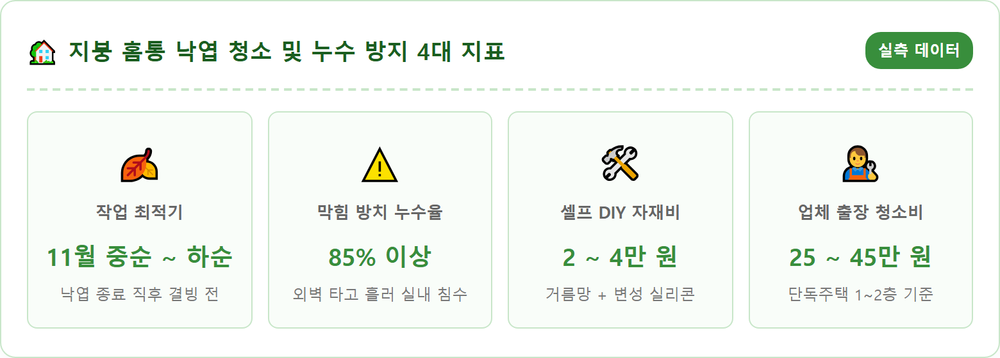
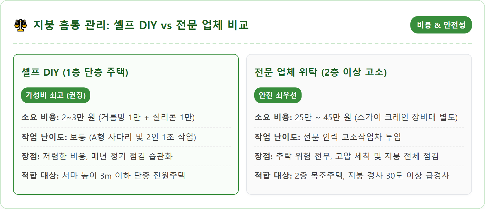
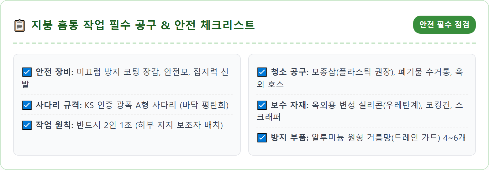
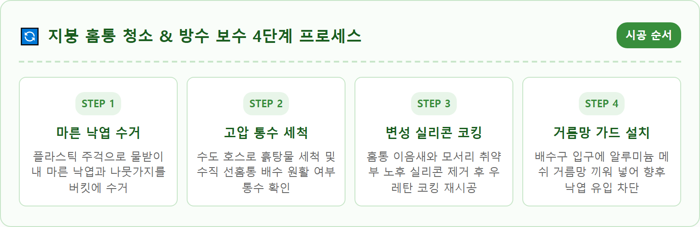
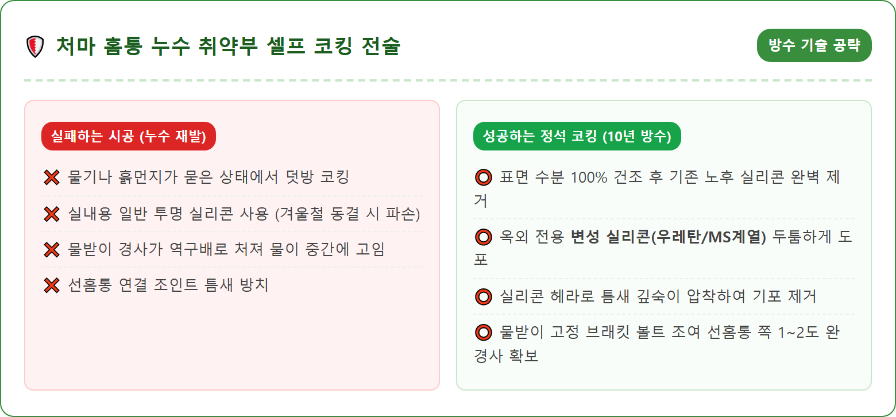
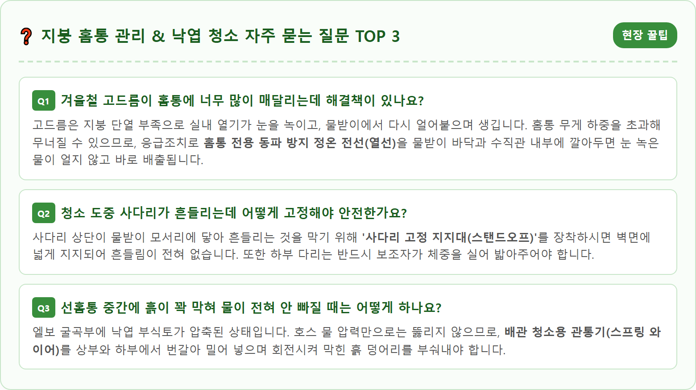

A photorealistic, detailed exterior maintenance scene of a modern suburban country house in South Korea during late autumn. A sturdy metal ladder securely positioned against the roof eave. A homeowner wearing heavy-duty work gloves and safety glasses carefully clearing dry autumn leaves and debris from a clean aluminum roof gutter. A clear view of a newly installed mesh gutter guard and clean downspout opening. The surrounding garden filled with golden fallen autumn leaves and bare deciduous trees. Crisp, bright autumn daylight, sharp focus on home maintenance details, professional architectural photography, 8k resolution, 1:1 aspect ratio.

가을철 울긋불긋한 단풍은 전원생활의 큰 낭만이지만, 나뭇잎이 지고 난 11월 중순이 되면 주택 소유자에게 가장 위협적인 시한폭탄으로 돌변합니다. 바람에 날린 활엽수 잎과 솔잎, 잔가지들이 지붕 골짜기와 처마 끝의 '물받이(레인 거터)'로 고스란히 흘러들어 가 쌓이기 때문입니다.
물받이에 쌓인 낙엽은 가을비에 젖으면서 끈적끈적한 부식토 흙더미로 변해 물이 빠져나가는 수직 배수관인 '선홈통' 입구를 철통같이 틀어막아 버립니다. 배수로가 막힌 상태에서 12월 한파와 함께 폭설이 내리면 치명적인 연쇄 파괴가 일어납니다. 지붕에서 녹아내린 눈물이 홈통 밖으로 배출되지 못하고 고여 있다가 밤새 꽁꽁 얼어붙어 부피가 팽창하면서 알루미늄이나 PVC 물받이를 뒤틀리게 찢어놓습니다.
더 위험한 것은 물이 역류하여 처마 안쪽 서까래와 처마 반자 목재를 썩히고, 외벽 미세 균열을 타고 실내 벽체로 스며들어 한겨울 거실 천장 누수와 곰팡이 대참사를 유발한다는 점입니다. 11월에 단 2시간을 투자해 홈통을 비워내지 않으면, 겨울철 수백만 원에 달하는 지붕 방수 공사비를 치러야 합니다.
홈통 청소는 너무 일찍 해도, 너무 늦게 해도 효과가 반감됩니다. 10월 초순에 성급하게 청소해 두면 10월 말과 11월 초에 본격적으로 떨어지는 만추의 낙엽이 다시 물받이를 채워 헛수고가 되기 십상입니다.
가장 이상적인 작업 적기는 주변 활엽수와 침엽수의 잎이 80~90% 이상 낙하를 마친 **11월 중순부터 하순 사이, 첫눈이 내리기 전**입니다. 이 시기에는 나뭇가지가 거의 앙상해져 추가로 유입될 낙엽의 양이 매우 적고, 아직 기온이 영하권으로 급락하지 않아 쌓인 이물질이 얼어붙지 않은 상태이기 때문입니다.
얼어붙지 않은 마른 상태에서는 낙엽을 가볍게 쓸어 담거나 진공청소기로 흡입하기 수월하며, 호스로 물을 흘려보내는 통수 테스트를 해도 배관이 얼지 않아 작업이 한결 안전하고 깔끔하게 마무리됩니다. 영하로 떨어져 흙과 얼음이 한 덩어리로 굳어지면 봄이 올 때까지 손쓸 수 없으므로 이번 주말을 넘기지 마셔야 합니다.

홈통 청소 작업에서 그 어떤 기술보다 앞서는 것은 '작업자의 안전'입니다. 한국산업안전보건공단 통계에 따르면 주택 유지보수 중 발생하는 추락 사고의 70% 이상이 사다리에서 발생합니다. 단층 주택 처마라 할지라도 2.5~3m 높이에서 떨어지면 골절이나 뇌진탕 등 중상을 입을 수 있습니다.
사다리는 반드시 지지 하중이 검증된 한국산업표준(KS) 인증 알루미늄 광폭 A형 사다리를 사용하셔야 합니다. 사다리를 설치할 바닥 면은 자갈이나 물기, 진흙이 없는 단단하고 평평한 지면이어야 하며, 지면과 사다리의 각도는 약 75도(4:1 법칙)를 유지해야 미끄러지지 않습니다. 사다리 맨 꼭대기 발판에는 절대로 올라서지 말아야 하며, 위에서 두 번째 계단까지만 디뎌야 균형을 잃지 않습니다.
가장 안전한 원칙은 **'절대 혼자 작업하지 않고 2인 1조로 진행하는 것'**입니다. 한 사람이 사다리에 오르면 다른 한 사람은 아래에서 사다리 다리를 양손으로 단단히 붙잡고 주변 안전을 살피는 보조 역할을 해야 합니다. 미끄럼 방지 코팅이 된 안전 작업 장갑, 바닥 접지력이 강한 운동화, 안전모 착용은 필수입니다. 2층 이상의 높이나 지붕 경사가 가파른 구조라면 무리하게 직접 올라가지 마시고 전문 업체를 부르는 것이 현명합니다.

안전 세팅이 끝났다면 본격적인 4단계 셀프 청소를 진행합니다. 1단계는 '마른 낙엽 수거'입니다. 물을 뿌리기 전, 홈통 바닥에 마른 상태로 쌓여 있는 부피 큰 낙엽과 나뭇가지를 먼저 걷어내야 합니다. 금속 모종삽은 알루미늄 물받이 코팅을 긁어 부식을 유발할 수 있으므로, 플라스틱 모종삽이나 못 쓰는 페트병을 사선으로 잘라 만든 수제 주걱을 사용하는 것이 좋습니다. 긁어낸 낙엽은 사다리에 걸어둔 양동이에 바로 담아 마당으로 흩날리지 않게 합니다.
2단계는 '침적 슬러지 제거'입니다. 낙엽 밑바닥에 가라앉아 진흙처럼 변한 부식토와 모래 가루를 젖은 솔로 문질러 긁어냅니다. 3단계는 대망의 '선홈통 통수 테스트'입니다. 옥외 수도 호스를 끌어올려 물받이 끝에서부터 물을 시원하게 흘려보냅니다.
물이 선홈통을 타고 막힘없이 콸콸 아래 마당 배수구로 배출되는지 소리와 유속을 확인해야 합니다. 만약 물이 내려가지 않고 물받이에 차오른다면 수직 배관 내부가 막힌 것이므로, 낚싯줄 형태의 배관 뚫는 스프링 와이어나 긴 막대로 선홈통 입구를 여러 번 쑤셔 막힌 오물을 아래로 밀어내야 합니다. 마지막 4단계는 물기가 완전히 마른 후 배수 경사(구배)가 수직 홈통 쪽으로 원활하게 기울어져 있는지 레벨을 확인하는 것입니다.

홈통 내부를 깨끗이 청소하고 나면 그동안 낙엽과 흙탕물에 가려져 보이지 않던 '홈통의 구조적 상처'들이 드러납니다. 처마 물받이는 3m 길이의 단품들을 서로 이어 붙이고 코너 엘보 부속을 연결하여 시공하기 때문에, 수년이 지나면 여름철 팽창과 겨울철 수축이 반복되면서 이음새 실리콘이 찢어지거나 들뜨게 됩니다.
이 틈새로 물이 한 방울씩 새어 나오면 처마 밑 서까래 목재가 썩어 들어가거나 외벽 페인트가 들뜨는 원인이 됩니다. 통수 세척 후 물기가 바짝 마른 맑은 날 오후, 코킹 보수 작업을 병행해야 합니다.
기존에 부식되어 너덜너덜해진 노후 실리콘은 커터칼이나 스크래퍼로 완전히 긁어내어 표면을 깨끗하게 정리합니다. 사용할 실리콘은 철물점에서 일반 실리콘(초산형/비초산형)을 사시면 안 되며, 자외선과 온도 변화에 강하고 유연성이 뛰어난 **'옥외용 변성 실리콘(MS 중성 폴리머)'**이나 **'우레탄 실리콘'**을 반드시 사용하셔야 합니다. 연결 이음새 안팎으로 두툼하게 도포한 후 실리콘 헤라(주걱)로 눌러 밀착시켜주면 겨울철 동결 팽창에도 끄떡없는 완벽한 방수막이 형성됩니다.

매년 가을마다 높은 사다리에 올라가 위태롭게 낙엽을 긁어내는 일이 부담스럽다면, 청소를 마친 직후 '배수구 거름망(드레인 가드)'을 설치하는 것을 적극 추천합니다. 단돈 몇만 원으로 향후 수년간 홈통 막힘 스트레스에서 완벽히 해방될 수 있는 최고의 월동 투자입니다.
거름망은 크게 두 가지 형태가 있습니다. 첫 번째는 가장 간편한 **'볼형 알루미늄 거름망(스파이더 드레인 필터)'**입니다. 철망을 전구 모양으로 둥글게 말아놓은 제품으로, 선홈통으로 물이 빠져나가는 구멍 입구에 쏙 꽂아 넣기만 하면 설치가 1초 만에 끝납니다. 나뭇잎이 배관 안으로 빨려 들어가는 것을 원천 차단해주며, 바람이 불면 말라붙은 낙엽이 자연스럽게 날아가 버립니다. 개당 2,000~3,000원 선으로 주택 전체에 4~6개만 설치하면 됩니다.
두 번째는 물받이 상부 전체를 덮는 **'전체 메쉬 커버(거터 가드)'**입니다. 폭 15cm 안팎의 알루미늄이나 플라스틱 망을 물받이 위에 길게 얹고 클립으로 고정하는 방식으로, 낙엽이 물받이 안으로 들어오는 것 자체를 막아줍니다. 나무가 집을 둘러싸고 있는 숲속 전원주택이라면 전체 메쉬망을 시공하시는 것이 반영구적인 관리에 훨씬 유리합니다.

지붕 위 물받이만 깨끗하다고 해서 홈통 관리가 끝난 것이 아닙니다. 지붕에서 쏟아져 내린 엄청난 양의 빗물이 최종적으로 어디로 빠져나가는지, '선홈통 하부 배수 처리'를 점검하는 것이 전원주택 기초를 지키는 핵심입니다.
선홈통 끝부분이 마당 흙바닥에 그대로 노출되어 있으면, 폭우나 눈 녹은 물이 쏟아질 때마다 주택 기초 콘크리트 주변의 흙을 깎아 먹는 세굴 현상이 발생합니다. 장기적으로는 주택 기초 지반이 침하하거나 마당 잔디가 패이고, 지하수가 건물 기초 틈으로 스며들어 바닥 습기를 유발합니다.
선홈통 하단에는 반드시 물길을 건물 바깥쪽 1.5m 이상으로 유도하는 **'빗물 유도 플렉시블 주름관'**이나 **'콘크리트 물받이 판(스플래시 블록)'**을 받쳐두어야 합니다. 마당에 우수관 맨홀이 묻혀 있다면 선홈통을 우수 배관에 직결하고, 흙이 역류하지 않도록 하부 거름망을 점검해 두셔야 겨울철 마당 빙판길 사고까지 완벽하게 예방할 수 있습니다.
홈통에 쌓이는 낙엽의 근본적인 원인은 지붕 위로 길게 드리워진 주변 정원수와 뒷산의 나뭇가지들입니다. 바람이 불 때마다 나뭇가지가 처마 끝을 긁어 기와나 지붕재를 훼손하고, 가을이면 엄청난 양의 낙엽 폭탄을 지붕 위로 투하합니다.
홈통 청소를 마친 김에 지붕 가장자리로부터 최소 1.5~2m 이내로 근접해 있는 나뭇가지들을 과감하게 잘라내는 '동계 전지(가지치기) 작업'을 병행하시기 바랍니다.
장대 톱이나 고지 가위를 이용해 지붕 쪽으로 뻗어 나온 굵은 가지를 미리 솎아내면 내년 가을 낙엽 유입량을 70% 이상 줄일 수 있습니다. 또한, 겨울철 폭설이 내렸을 때 무거운 눈꽃을 이기지 못하고 나뭇가지가 부러지면서 지붕을 덮쳐 기와를 파손하는 2차 재난도 미연에 방지할 수 있습니다.
지붕 홈통 청소를 성공적으로 마쳤다면, 집 주변을 한 바퀴 돌며 겨울철 주택 외벽과 설비의 전반적인 월동 준비 상태를 최종 점검해야 합니다.
첫째, 마당 야외 부동전의 물빼기(퇴수 밸브 차단)를 완료했는지 점검합니다. 둘째, 보일러 연통의 배기 가스 연결부 실리콘이 떨어져 나가지 않았는지 눈으로 확인합니다. 셋째, 창호 틈새로 찬바람이 새어 들어오지 않도록 모헤어와 문풍지를 점검합니다.
작은 관심과 반나절의 정비가 혹독한 한파 속에서도 온 가족이 따뜻하고 안락하게 겨울을 보낼 수 있는 든든한 방패가 되어줍니다. 안전 장비를 갖추고 이번 11월, 우리 집 지붕과 처마를 정성껏 보살펴보시기 바랍니다.
| 점검 항목 | 세부 조치 내용 | 권장 교체/정비 주기 |
|---|---|---|
| 처마 물받이 내부 | 마른 낙엽 수거 및 진공 흡입, 바닥 슬러지 물청소 | 연 1회 (매년 11월 낙엽 직후) |
| 선홈통 배수 상태 | 호스 통수 테스트로 막힘 및 역류 여부 확인 | 봄 해빙기 / 가을 월동 전 2회 |
| 이음새 코킹 실리콘 | 노후 실리콘 제거 후 옥외용 우레탄/변성 실리콘 도포 | 3~5년 주기 균열 발생 시 |
| 배수구 거름망 | 알루미늄 메쉬 드레인 필터 설치 및 변형 점검 | 설치 후 반영구 (가을철 점검) |
| 하부 빗물 유도관 | 기초로부터 1.5m 바깥으로 배수로 유도 블록 점검 | 동절기 빙판 결빙 전 점검 |